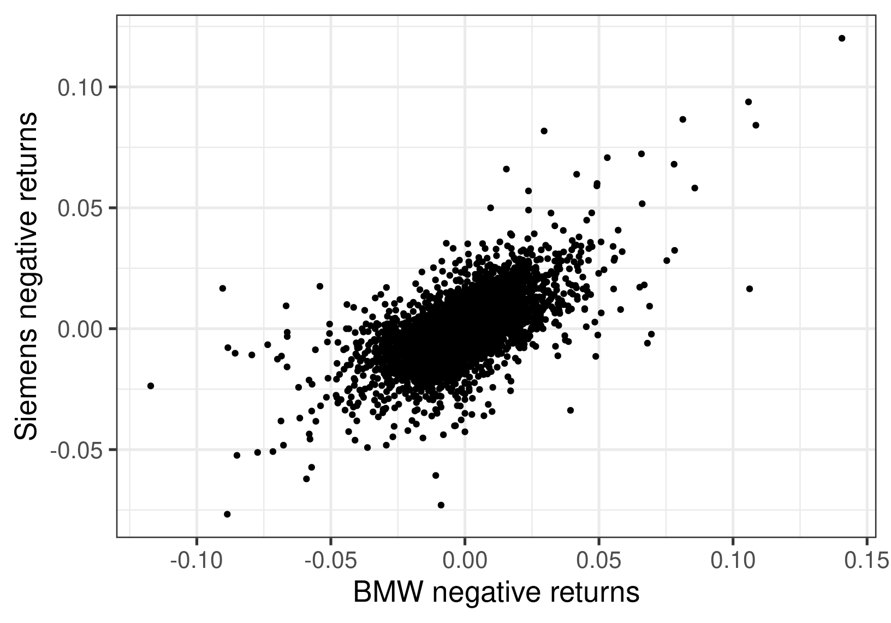
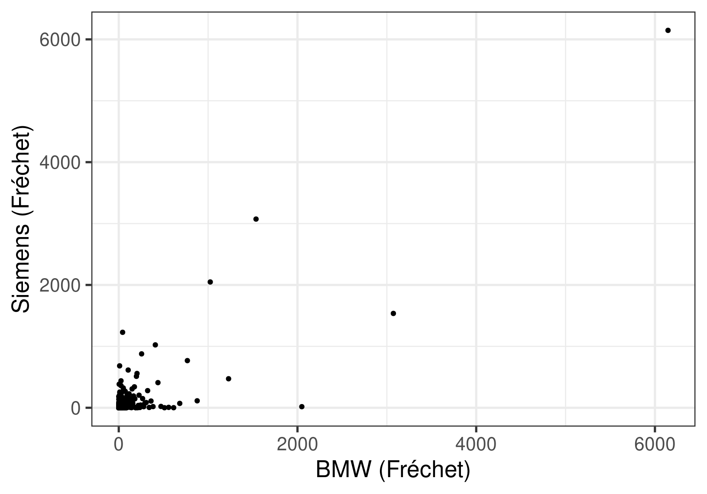
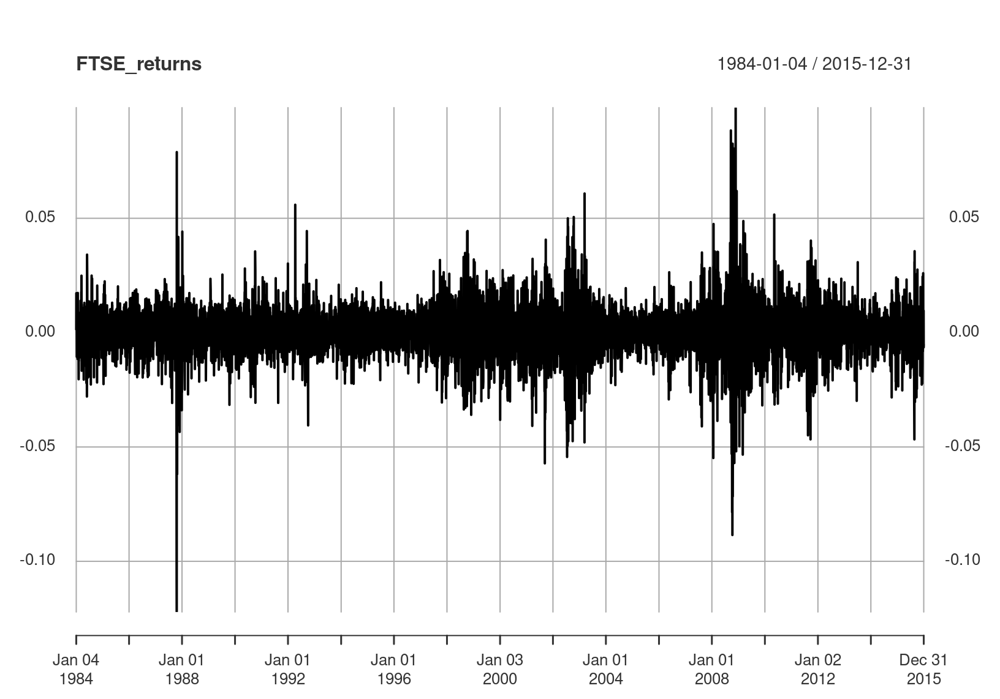

7 Extremes in Finance
In this chapter, we look at methods in extreme value theory that are suitable for applications to financial data. However, it should not be mistaken that they are not applicable to other kinds of data e.g. environment data.
7.1 The Hill estimator for heavy-tailed data
Financial data almost always have heavy tails \((\xi>0)\). Sometimes a simpler model is assumed for the survivor function, which is a good approximation to the GPD for large values. We assume \[\begin{eqnarray} \Pr(X>x) \approx \frac{c}{x^{\alpha}},~~~c>0, \alpha>0, x>u, \tag{7.1} \end{eqnarray}\] for \(u\) a high threshold. Thus we have \[\begin{eqnarray} \Pr(X>x|X>u) \approx (u/x)^\alpha. \tag{7.2} \end{eqnarray}\] This model is very similar to the GPD for \(\xi>0\) and large \(x\).
We begin with the GPD expression for \(\Pr(X>x|X>u)\): \[\begin{align*} \left[1+\xi \left(\frac{x-u}{\sigma_u}\right)\right]_+^{-1/\xi} & = \left(\frac{\sigma_u}{\xi}\right)^{1/\xi} x^{-1/\xi} \left[1+\frac{\sigma_u-\xi u}{\xi x}\right]^{-1/\xi}\\ & = \left(\frac{\sigma_u}{\xi}\right)^{1/\xi} x^{-1/\xi}[1+O(x^{-1})],~~x\to\infty \end{align*}\] Now \(\sigma_u = \sigma+\xi(u-\mu)\), so \(\sigma_u-\xi u\) does not depend on \(u\) and furthermore \[\begin{eqnarray*} \left(\frac{\sigma_u}{\xi}\right)^{1/\xi} = u^{1/\xi}\left(1+\frac{\sigma/\xi-\mu}{u}\right)^{1/\xi} \approx u^{1/\xi} \end{eqnarray*}\] for large \(u\). Therefore \(\Pr(X>x|X>u) \approx (u/x)^{1/\xi}\), for large \(x\) and large \(u\), which is the expression (7.2) for \(\alpha=1/\xi\).
7.1.1 The Hill estimator of \(\alpha\)
The advantage of equation (7.1) is it lends itself to a simple, closed form estimator for \(\alpha\) (equivalently \(\xi\)). Although numerical methods now make maximisation of GPD likelihoods very simple, the Hill estimator is still widely used by many who work with heavy-tailed data. There is more than one way to derive the estimator: we shall stick with a likelihood motivation.
According to (7.1), the density for an observation, given that it exceeds \(u\), is \[\begin{eqnarray*} f(x|X>u) = \alpha u^{\alpha} x^{-\alpha-1}. \end{eqnarray*}\] For a total of \(n_u\) threshold exceedances, this gives the MLE of \(\alpha\) as \[\begin{eqnarray*} \hat{\alpha} = \left[\frac{1}{n_u} \sum_{i=1}^{n_u} (\log x_i - \log u)\right]^{-1}. \end{eqnarray*}\] Often the threshold \(u\) is actually taken to be the \(k\)-th order statistic, \(X_{(k)}\). The choice of \(k\) is similar to the choice of \(u\), in the sense of the bias-variance trade-off involved.
7.1.2 Estimation of \(c\)
Estimation of \(c\) can be performed by using the empirical proportion of exceedances to estimate the theoretical proportion: \[\begin{eqnarray*} \Pr(X>u) = \frac{c}{u^{\alpha}} =\frac{n_u}{n} \end{eqnarray*}\] so \(\hat{c} = \frac{n_u}{n} u^{\hat{\alpha}}\). Plugging in the estimated \(\hat{\alpha}\), \(\hat{c}\) into equation (7.1) provides a simple estimate of high quantiles. \[\begin{eqnarray*} x_p = \left(\frac{p}{\hat{c}}\right)^{-1/\hat{\alpha}}. \end{eqnarray*}\]
7.2 Modelling dependence
Suppose we are interested in the risk associated to more than one stock. Tho assess this we need to model the dependence between the stocks at extreme levels.  The figure shows the negative returns of BMW plotted against the negative returns of Siemens over the same period. There is a positive relationship, and we need to take this into account in calculating the risk of a portfolio containing both of these stocks.
7.2.1 Correlation
The first measure of dependence people usually think of is correlation. \[ \begin{aligned} \mbox{Corr}(X,Y) = \frac{E(XY)-E(X)E(Y)}{\sqrt{\mbox{Var}(X)}\sqrt{\mbox{Var}(Y)}} \end{aligned} \] This measure:
- Requires existence of first and second moments
- Is not invariant to marginal choice
- Only fully characterises the dependence if \((X,Y)\) have a bivariate Gaussian distribution.
7.2.2 Alternative dependence measures
Fitting a bivariate Gaussian distribution to the data with the estimated correlation coefficient is as arbitrary as fitting a Gaussian model to the margins and using the estimated tail for the extremes.
As in the univariate case, we anticipate that dependence at extreme levels is different to that at “average” levels. We don’t want to contaminate our estimate of extremal dependence with average dependence.
7.2.2.1 Motivating examples
Let us assume that our variables have standard Fréchet margins, so \(\Pr(X\leq x) = e^{-1/x}\). As \(x\to\infty\), \[\begin{eqnarray*} \Pr(X>x) = x^{-1}[1+O(x^{-1})]. \end{eqnarray*}\]
Independence
If \((X,Y)\) are independent then their joint survivor function evaluated on the diagonal can be expressed as
\[\begin{eqnarray*}
\Pr(X>x,Y>x) = x^{-2}[1+O(x^{-1})]~~x\to\infty.
\end{eqnarray*}\]
Bivariate extreme value distribution
If \(\Pr(X\leq x, Y\leq y) = \exp\{-V(x,y)\}\) with \(V:(0,\infty)^2\to(0,\infty)\) homogeneous of order 1 we say \((X,Y)\) have a bivariate extreme value distribution. Then
\[\begin{eqnarray*}
\Pr(X>x,Y>x) = x^{-1}[2-V(1,1)+O(x^{-1})],~~x\to\infty.
\end{eqnarray*}\]
Bivariate normal distribution
If \((\Phi^{-1}(\exp\{-1/X\}), \Phi^{-1}(\exp\{-1/Y\})) \sim\) N\(_2(\rho)\) then
\[\begin{eqnarray*}
\Pr(X>x,Y>x) = x^{-2/(1+\rho)}[C_{\rho} (\log(x))^{\rho/(1+\rho)}+o(1)],~~x\to\infty.
\end{eqnarray*}\]
7.2.3 The coefficient of tail dependence
Let us assume that our variables have standard Fréchet margins (achieved by a transformation). Then a very general assumption is \[\begin{eqnarray} \Pr(X>x, Y>x) = L(x)x^{-1/\eta},~~~x\to \infty, \tag{7.3} \end{eqnarray}\] where
- \(L:(0,\infty)\to (0,\infty)\) is termed a slowly varying function3
- \(\eta \in(0,1]\) is the coefficient of tail dependence
Values of \(\eta\) close to 0 indicate weak (negative) extremal dependence, \(\eta=1/2\) corresponds to near independence, and \(\eta\) near 1 corresponds to strong extremal dependence.
Let us suppose that \(L(x) \approx C\), since slowly varying functions do not change much over a large range of \(x\). We can rewrite equation (7.3) as \[\begin{eqnarray*} {\Pr(\min(X,Y)>x) \approx Cx^{-1/\eta}}. \end{eqnarray*}\] Note the similarity with equation (7.1). We can use the Hill estimator to estimate \(\eta\).
For an interpretation of \(\eta\), consider the conditional probability \[\begin{eqnarray*} \Pr(X>x | Y>x) \approx Cx^{1-1/\eta}. \end{eqnarray*}\] If \(\eta=1\) this probability is constant irrespective of the value of \(x\) (as long as \(x\) is large). Otherwise it decreases with \(x\), and this decrease is more rapid more smaller \(\eta\).
7.2.4 Example: dependence in negative returns
The first stage in the estimation is to transform the margins to standard Fréchet. We need the Probability Integral Transform (Section 3.2.5).
If \(X \sim F\), then \(-1/\log F(X) \sim\) Fréchet. Thus we need an estimate of \(F\). We could either
- Use the empirical distribution function (EDF) throughout
- Use the EDF up to a threshold \(u\), and the GPD above the threshold
Option 1 means setting: \[\begin{eqnarray*} \tilde{F}(X_i) = \mbox{rank}(X_i)/(n+1). \end{eqnarray*}\] For Option 2, above a threshold \(u\), we set \[\begin{eqnarray*} \hat{F}(X_i) = 1-\hat{\phi}_u[1+\hat{\xi}(X_i-u)/\hat{\sigma}_u]^{-1/\hat{\xi}}_+. \end{eqnarray*}\]
 Set \(Z_i = \min(X_i,Y_i)\) \[\begin{eqnarray*} \hat{\eta} = \frac{1}{n_u} \sum_{i=1}^{n_u} (\log z_i - \log u) \end{eqnarray*}\] For \(u\) equal to the 0.95 quantile of the \(Z_i\) we have \(\hat{\eta} = 0.916\) (standard error 0.055), suggesting fairly strong extremal dependence.
We can now estimate the level of the loss that is exceeded by both variables with small probability \(p\). \[\begin{eqnarray*} \Pr(\min(X,Y)>z_p) \approx \hat{C} z_p^{-1/\hat{\eta}} = p, \end{eqnarray*}\] using the estimate of \(C\) as in Section 7.1.2. To translate the estimated \(z_p\) back to the returns scale we need to use the inverse of the earlier transformation to the Fréchet scale. This, amongst other reasons, suggests use of Option 2 is preferable for the transformation.
7.2.5 Relation between \(\eta\) and \(\theta\)?
7.3 Value at Risk, Expected Shortfall, & Volatility
p.64 from previous notes (BMW)
The BMW data were maxima of \(n=66\) consecutive negative returns (which is approximately three months of trading days). There were \(g=93\) such maxima, so the maxima relate to a total of \(T=ng=6138\) daily negative returns.
The 5% Value at Risk (that is, the negative return value that will be exceeded with probability 5% on a given day) is \[\begin{eqnarray*} \hat\mu -\frac{\hat\sigma}{\hat\xi}\left[1-\{-66\log(1-0.05)\}^{-\hat\xi}\right] = 0.0153 \end{eqnarray*}\]
The 1% Value at Risk is \[\begin{eqnarray*} \hat\mu -\frac{\hat\sigma}{\hat\xi}\left[1-\{-66\log(1-0.01)\}^{-\hat\xi}\right] = 0.033 \end{eqnarray*}\]
To obtain estimates of uncertainty, we could again use the delta method or profile likelihood.
p.96-99 from previous notes
Suppose we fit the GPD to a series of negative returns. How do we calculate the Value at Risk?
Recall VaR\((p)\) satisfies \[\begin{eqnarray*} \Pr(X\leq \mbox{VaR}(p)) = 1-p. \end{eqnarray*}\]
We know \[\begin{eqnarray*} \Pr(X> x | X>u) = \left[1+\xi\left(\frac{x-u}{\sigma_u}\right)\right]^{-1/\xi}_+. \end{eqnarray*}\] We need to undo the conditioning to calculate the quantile.
7.3.1 Undoing the conditioning
The GPD provides a model for excesses conditional upon being an excess. We undo this conditioning by modelling the number of exceedances, \(N_u\), assuming either
- \(N_u \sim\) Poisson\((\gamma_u)\), ~~~ \(\gamma_u = E(N_u)\)
- \(N_u \sim\) Binomial\((n,\phi_u)\), ~~~ \(\phi_u=\Pr(X>u)\)
The first option is equivalent to the Poisson process model of Section 3.1.4, with a different parameterisation. The second is almost equivalent for large sample sizes.
The maximum likelihood estimate for \({\phi_u}\) is \({n_u/n}\), with \({N_u=n_u}\) the observed number of exceedances of \(u\), from a total of \(n\) data points.
VaR\((p)\) can thus be found by solving \[\begin{eqnarray*} 1-\left[1+\hat\xi\left(\frac{\mbox{VaR}(p)-u}{\hat\sigma_u}\right)\right]^{-1/\hat\xi} \hat\phi_u = 1-p \end{eqnarray*}\] to give \[\begin{eqnarray*} \mbox{VaR}(p) = u +\frac{\hat\sigma_u}{\hat\xi}\left[\left(\frac{\hat\phi_u}{p}\right)^{\hat\xi}-1\right]. \end{eqnarray*}\]
7.3.2 Expected Shortfall
Expected Shortfall, \({\mbox{ES}(p)}\), is the name given to the expected negative return, given that the Value at Risk threshold has been exceeded. If \({X}\) denotes a negative return then \[\begin{eqnarray*} \mbox{ES}(p) = E[X|X>\mbox{VaR}(p)]. \end{eqnarray*}\] Assuming \(\mbox{VaR}(p)\) to be a high threshold, and we have fitted a GPD above a threshold \({u<\mbox{VaR}(p)}\), this is calculated using the expression in Section 3.2.2. \[\begin{align*} \mbox{ES}(p) &= \mbox{VaR}(p) + \frac{\sigma_v}{1-\xi},~~~~~~~~~~~~~~~~~~~~~~~~v=\mbox{VaR}(p)\\ &= \mbox{VaR}(p) + \frac{\sigma_u + \xi(\mbox{VaR}(p) - u)}{1-\xi}. \end{align*}\]
p.143-151 from previous notes (BMW)
Thus far we have ignored dependence in our Value at Risk calculations. We have seen two methods for calculating VaR:
- Fitting the GEV to “subperiod maxima” (e.g. three-monthly maxima) and solving \(\tilde{G}^{1/n}(z_p) \approx F(z_p) = 1-p\)
- Fitting the GPD to all exceedances and solving \(P(X>z_p|X>u)\phi_u \approx 1-F(z_p) = p\)
with \(z_p = \mbox{VaR}(p)\).
7.3.3 Adjustment to VaR for subperiod maxima
As seen in Section 5.3.2 our estimated GEV for a stationary process is \(\tilde{H}(x)\approx F(x)^{n\theta}\). Thus we need to solve \({\tilde{H}^{1/(n\theta)}(z_p) = 1-p}\): \[\begin{eqnarray*} \hat{z_p}=\hat\mu -\frac{\hat\sigma}{\hat\xi}\left[1-\{-n\theta\log(1-p)\}^{-\hat\xi}\right] \end{eqnarray*}\] with \(z_p = \mbox{VaR}(p)\). If \(\theta<1\) this estimate is larger than when \(\theta=1\). Ignoring dependence thus means we underestimate value at risk.
We need all data to estimate the extremal index (via the Runs Method).
7.3.4 Adjustment to VaR for all exceedances
The original estimate is still valid in this case. However, if we use all exceedances to estimate parameters, then an adjustment to the standard errors would be required (cf. Section 6.2).
7.3.5 Volatility
In Section 6.1.1.1, we saw that whether or not we account for volatility makes a difference to our analysis.

Thus far we have calculated VaR as a quantile of the entire series over a long time period, ignoring the local variation. In practice, we may want to estimate VaR for tomorrow rather than on an arbitrary day.
One approach to removing volatility is similar to that seen in Section 6.1.1.1 . Define the filtered negative returns by \[\begin{eqnarray*} Z_t = \frac{X_t - \tilde{E}(X_t)}{\tilde{SD}(X_t)} \end{eqnarray*}\] where \(\tilde{E}(X_t)\) and \(\tilde{SD}(X_t)\) are local estimates of the mean and standard deviation, for example using the sample mean and sample standard deviation of the previous \(h\) observations.
Suppose that we have a series of length \(T\). The value at risk for the day \(T+1\) can be estimated as \[\begin{eqnarray*} \mbox{VaR}(p)[T+1] = \mbox{VaR}_{Z}(p)\times \tilde{SD}(X_T) + \tilde{E}(X_T) \end{eqnarray*}\] where \({\mbox{VaR}_{Z}(p)}\) is the value at risk estimated from the filtered series \(Z_t\).
7.4 Volatility models
Fit GARCH models, then look at the standardised residuals, which are the
7.4.1 A two-stage approach
Bibliography
Breidt, J. F., and R. A. Davis. 1998. “Extremes of Stochastic Volatility Models.” Annals of Applied Probability 8: 664–75.
de Haan, L., S. I. Resnick, H. Rootzén, and C. G. de Vries. 1989. “Extremal Behaviour of Solutions to a Stochastic Difference Equation with Applications to ARCH Processes.” Stochastic Processes and Their Applications 32: 213–24.
Laurini, F., and J. A. Tawn. 2012. “The Extremal Index for the GARCH\((1,1)\) Process.” Extremes 15: 511–29. https://doi.org/10.1007/s10687-012-0148-z.
Mikosch, T., and C. Stărică. 2000. “Limit Theory for the Sample Autocorrelations and Extremes of a GARCH\((1,1)\) Process.” Annals of Statistics 28: 1427–51.
A slowly varying function satisfies \(\lim_{t\to\infty}L(tx)/L(t) = 1\), for any \(x>0\). Simple examples are \(L(x) = \log x\), and \(L(x) = C>0\), a positive constant.↩